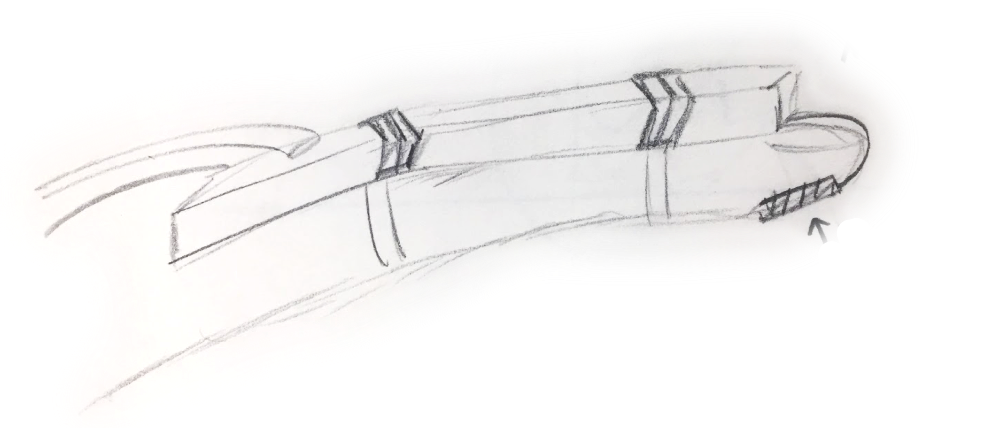
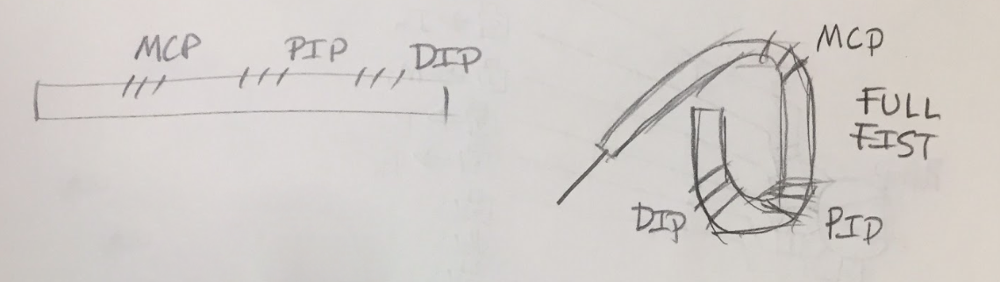

Fingbot!

Advised by professor Chris Atkeson and Akihiko Yamaguchi, our group of 6 set out on a semester long project to fabricate a soft robotic actuator. Our intention was to build a prototype finger assist that could be used to help elderly people with limited grip strentgh hold and move objects in their daily life.
As the only mechanical engineer on a team with two electrical engineers, two computer scientists, and a human-computer interactionist, a lot of my responsiblites were in fabrication.

While there are four basic finger grip types (full fist, hook fist, straight fist, and platform), we chose to model after the full fist, as it required the most amount of "joints," and accordingly would be an intersting challege to pursue.
From there, using a variety of tubing, air pumps, solenoid valves, and an Arduino, I designed a pump system and array of vavles to allow us controll over the pressure of air in the actuator we made from a pourable silicone (Ecoflex).
put the cad images and such